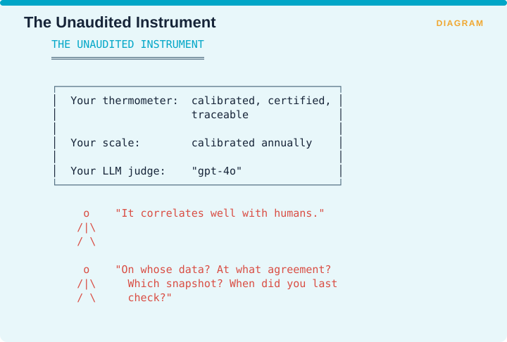

Measuring Retrieval › Meta-Evaluation and Operation
Part
Meta-Evaluation and Operation
Judge calibration, test-set quality, metric selection, and rollout
Meta-Evaluation: Scope and Evidence
Operational Practice
Chapters 13-15
Meta-Evaluation · Judge Reliability · The Narrowing Exercise
Citation status. Two of the three outstanding OPEN entries are lifted to VERIFIED in Appendix 5A (Trust-Score components; GainRAG method). One remains OPEN and is stated as such.
Purpose. Everything before this part described metrics. These chapters answer two questions that determine whether any of it works:
- Can you trust the thing doing the measuring? (Chapters 13-14)
- Which eight metrics should you actually instrument? (Chapter 15)
Chapter 15 is the one to read if you read only one chapter in this entire book.
Chapter 13 - Can You Trust Your Judge?
13.0 The dependency nobody audits
Most modern RAG metrics are computed by a language model. Faithfulness, context relevance, CUE’s adherence axis and answer correctness all work that way. That language model is a measuring instrument, and no other instrument anywhere in your stack is deployed with so little calibration behind it.

The figure makes the comparison uncomfortable. Your thermometer is calibrated, certified and traceable. Your scale is calibrated annually. Your judge is “gpt-4o”.
The usual defence is that it correlates well with human judgment, which invites four questions nobody has ready answers for: on whose data, at what level of agreement, which snapshot of the model, and when was it last checked?
13.1 The empirical picture
Source: Brehme, Ströhle & Breu, Can LLMs Be Trusted for Evaluating RAG Systems? A Survey of Methods and Datasets, SDS 2025 · arXiv:2504.20119 VERIFIED
Across a systematic review of 63 papers:
| Finding | Number |
|---|---|
| Papers using LLMs as judges | 41 |
| Papers comparing LLM judges against human judges | 6 |
| Result in those six | A positive correlation |

Six studies finding a positive correlation sounds reassuring until you consider what that phrase permits. A correlation of 0.3 is a positive correlation, so it is close to the weakest finding it is possible to report. The survey’s own conclusion is that language models can be trusted to some extent and that their validity remains to be thoroughly established.
The review also names the circularity problem directly, noting it is unresolved whether evaluation quality is compromised when a model generates the questions, answers them, and then evaluates its own output.
If your pipeline uses one framework for both synthetic test generation and judging, you are inside that loop right now.
13.2 A concrete ceiling on general-purpose judging
SURE-RAG in Supplement B §C.9 provides a hard number worth quoting whenever somebody proposes using a general model as a judge for a specialized task.
| Verifier | Macro-F1 |
|---|---|
| Purpose-built calibrated verifier | 0.9075 |
| Strong concat cross-encoder | 0.8888 ± 0.0109 |
| GPT-4o as judge | 0.7284 |
| DeBERTa mean-pooling | 0.6516 |

The gap is 18 points between the purpose-built verifier and the general model. GPT-4o is state of the art at generating text, and acting as a verifier on a specific task is a different job, at which a purpose-built model beat it substantially. General capability is not measurement capability.
13.3 The four judge biases to test for
None of these is unique to RAG, and all of them contaminate RAG metrics.

Position bias means the judge prefers whichever candidate came first, and you test it by swapping the order of two candidates and re-scoring, where the disagreement rate is the bias. Verbosity bias means the judge prefers longer answers, and you test it by scoring pairs with matched content at two different lengths, where any systematic preference is bias. Self-preference means a judge favours outputs from its own model family, and you test it by having judge X score outputs from both X and Y and comparing against a human ranking. Version drift means the judge changes silently over time, and you test it with a frozen anchor set re-run on every judge change, which §13.5 sets out.
Position bias has the cheapest test of the four and is almost never run. Swap the order of two candidate answers, re-score, and if the verdict flips more than a few percent of the time then your pairwise judge results are partly noise.
13.4 Use α, not κ
A small technical point with real consequences.

Cohen’s κ handles exactly two raters on nominal data. Krippendorff’s α handles any number of raters, copes with missing data, and works on nominal, ordinal and interval scales.
Your actual setup is typically one language model judge plus two human annotators, where the two humans did not both label everything. That is three raters with incomplete overlap, which κ cannot represent, so use α.
Volume I §6.3.2 established the underlying point from the classical literature, which is that assessor disagreement leaves system rankings surprisingly stable while absolute scores move around. Trust your relative comparisons more than your absolute numbers, and note that this applies with more force rather than less when the assessor is a language model.
13.5 The judge-drift protocol
There is still no published metric for judge drift, so this is the interim procedure, restated here as a standing operating requirement rather than a suggestion.

Pin the dated snapshot rather than a moving label. Freeze an anchor set of 100 to 200 items with human labels and never regenerate it. On every judge change, re-run that anchor set and record Krippendorff’s α. If α moves materially, your historical series is broken, so draw a vertical line on the chart, say so, and do not let the line continue across it. Never let one model both generate synthetic test data and judge results. And record the judge version in every experiment record, beside the embedder version.
Step 4 is the one teams resist, because it makes a dashboard look broken. The dashboard is broken. The line was already meaningless before anybody drew attention to it.
Measuring Retrieval · Madhava Gaikwad · First edition, September 2026